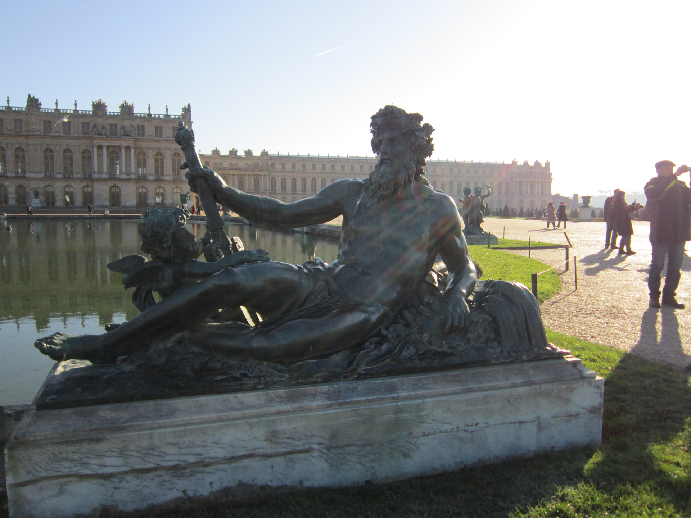

Hauts-de-France
Calais et Boulogne-Sur-Mer

Hauts-de-France est entré dans Calais et Picardie. Hauts-de-France as une frontière commune avec la Belgique sur l'ouest et la Manche sur l'est. Le peuple de Boulogne-Sur-Mer est bien connu pour la soupe des fruits de mer frais, Gaineé Boulounnaise. Voici un texte de remplissage français. Je n'imagine pas qu'il soit grammaticalement correct, mais bien. Ce projet s'est transformé en un projet scolaire en classe de français en un projet de conception web impliqué. Voici un texte de remplissage français. Je n'imagine pas qu'il soit grammaticalement correct, mais bien. Ce projet s'est transformé en un projet scolaire en classe de français en un projet de conception web impliqué. Hauts-de-France as une frontière commune avec la Belgique sur l'ouest et la Manche sur l'est. Le peuple de Boulogne-Sur-Mer est bien connu pour la soupe des fruits de mer frais, Gaineé Boulounnaise. Voici un texte de remplissage français. Je n'imagine pas qu'il soit grammaticalement correct, mais bien.
Grand Est
Petite ville près de Strasbourg

Précédemment Alsace, Champagne-Ardenne et Lorraine. Capitale administrative: Strasbourg. Frontières Belgique, Luxembourg, Allemagne et Suisse sur les cêtés nord et est. Vosges Montagne à l'est et Ardennes au nord. Bordé par le Rhin á l'est. La fusion a étè fortement opposèe par l'Alsace et Strasbourg a été faite la capitale pour les apaiser. Voici un texte de remplissage français. Je n'imagine pas qu'il soit grammaticalement correct, mais bien. Ce projet s'est transformé en un projet scolaire en classe de français en un projet de conception web impliqué. Voici un texte de remplissage français. Je n'imagine pas qu'il soit grammaticalement correct, mais bien. Ce projet s'est transformé en un projet scolaire en classe de français en un projet de conception web impliqué. Voici un texte de remplissage français. Je n'imagine pas qu'il soit grammaticalement correct, mais bien. Ce projet s'est transformé en un projet scolaire en classe de français en un projet de conception web impliqué.
Bourgogne-Franche-Comté
Produits: comté et Vin jaune!

Précédemment. Bordures Auvergne-Rhône-Alpes au sud et suisse à l'ouest. Région rurale. Voici un texte de remplissage français. Je n'imagine pas qu'il soit grammaticalement correct, mais bien. Ce projet s'est transformé en un projet scolaire en classe de français en un projet de conception web impliqué. Voici un texte de remplissage français. Je n'imagine pas qu'il soit grammaticalement correct, mais bien. Ce projet s'est transformé en un projet scolaire en classe de français en un projet de conception web impliqué. Voici un texte de remplissage français. Je n'imagine pas qu'il soit grammaticalement correct, mais bien. Ce projet s'est transformé en un projet scolaire en classe de français en un projet de conception web impliqué. Voici un texte de remplissage français. Je n'imagine pas qu'il soit grammaticalement correct, mais bien. Ce projet s'est transformé en un projet scolaire en classe de français en un projet de conception web impliqué.
Auvergne-Rhône-Alpes
Volcans: la Chaine des Puys

Précédemment Frontières Suisse et Italie au nord-est et à l'est. Auvergne est une région montagneuse rurale au centre de la France populaire pour le ski et la randonnée. Villes é3lèbres du ciel comme Vichy célèbrent les sources thermales naturelles des régions. Voici un texte de remplissage français. Je n'imagine pas qu'il soit grammaticalement correct, mais bien. Ce projet s'est transformé en un projet scolaire en classe de français en un projet de conception web impliqué. Voici un texte de remplissage français. Je n'imagine pas qu'il soit grammaticalement correct, mais bien. Ce projet s'est transformé en un projet scolaire en classe de français en un projet de conception web impliqué. Voici un texte de remplissage français. Je n'imagine pas qu'il soit grammaticalement correct, mais bien. Ce projet s'est transformé en un projet scolaire en classe de français en un projet de conception web impliqué.
Provence-Alpes-Cote d'Azur
La capitale est belle Marseille

Séjour du même. Economiquement, le troisième plus important en France. Voici un texte de remplissage français. Je n'imagine pas qu'il soit grammaticalement correct, mais bien. Ce projet s'est transformé en un projet scolaire en classe de français en un projet de conception web impliqué. Voici un texte de remplissage français. Je n'imagine pas qu'il soit grammaticalement correct, mais bien. Ce projet s'est transformé en un projet scolaire en classe de français en un projet de conception web impliqué. Voici un texte de remplissage français. Je n'imagine pas qu'il soit grammaticalement correct, mais bien. Ce projet s'est transformé en un projet scolaire en classe de français en un projet de conception web impliqué. Voici un texte de remplissage français. Je n'imagine pas qu'il soit grammaticalement correct, mais bien. Ce projet s'est transformé en un projet scolaire en classe de français en un projet de conception web impliqué.
Corse
La capitale de Corse : Ajaccio

Séjour du même Île en Méditerranée, au sud-est du continent français. Voici un texte de remplissage français. Je n'imagine pas qu'il soit grammaticalement correct, mais bien. Ce projet s'est transformé en un projet scolaire en classe de français en un projet de conception web impliqué. Voici un texte de remplissage français. Je n'imagine pas qu'il soit grammaticalement correct, mais bien. Ce projet s'est transformé en un projet scolaire en classe de français en un projet de conception web impliqué. Voici un texte de remplissage français. Je n'imagine pas qu'il soit grammaticalement correct, mais bien. Ce projet s'est transformé en un projet scolaire en classe de français en un projet de conception web impliqué. Voici un texte de remplissage français. Je n'imagine pas qu'il soit grammaticalement correct, mais bien. Ce projet s'est transformé en un projet scolaire en classe de français en un projet de conception web impliqué.
Occitanie
Drapeau d'Occitanie

Précédemment Languedoc-Roussillon et Midi-Pyrénées. Cités célèbres: Toulouse, Montpellier, Nîmes. Le nouveau nom Occitanie ne doit pas &ecrictre confondu avec le plus large Entité culturelle de l'Occitanie, dont fait partie la nouvelle région administrative. Voici un texte de remplissage français. Je n'imagine pas qu'il soit grammaticalement correct, mais bien. Ce projet s'est transformé en un projet scolaire en classe de français en un projet de conception web impliqué. Voici un texte de remplissage français. Je n'imagine pas qu'il soit grammaticalement correct, mais bien. Ce projet s'est transformé en un projet scolaire en classe de français en un projet de conception web impliqué. Voici un texte de remplissage français. Je n'imagine pas qu'il soit grammaticalement correct, mais bien. Ce projet s'est transformé en un projet scolaire en classe de français en un projet de conception web impliqué. Voici un texte de remplissage français. Je n'imagine pas qu'il soit grammaticalement correct, mais bien. Ce projet s'est transformé en un projet scolaire en classe de français en un projet de conception web impliqué.
Nouvelle-Aquitaine
Beaux chateaux et vignobles

Précédemment Aquitaine, Limousin et Poitou-Charentes. Le sud-ouest du pays. La plus grande région de France, 5,8 millions d'habitants, et une géographie légèrement plus grande que l'Australie. La plus grande ville: Bordeaux. 25 grandes zones urbaines. Voici un texte de remplissage français. Je n'imagine pas qu'il soit grammaticalement correct, mais bien. Ce projet s'est transformé en un projet scolaire en classe de français en un projet de conception web impliqué. Voici un texte de remplissage français. Je n'imagine pas qu'il soit grammaticalement correct, mais bien. Ce projet s'est transformé en un projet scolaire en classe de français en un projet de conception web impliqué. Voici un texte de remplissage français. Je n'imagine pas qu'il soit grammaticalement correct, mais bien. Ce projet s'est transformé en un projet scolaire en classe de français en un projet de conception web impliqué.
Centre
Le Palais de Versailles

Séjour du même. Comprend le centre de la Loire. La capitale est Orléans mais la plus grande ville est Tours. Connu sous le nom de "Jardin de la France" pour les vergers, les vignes, les artichauts et les asperges. Voici un texte de remplissage français. Je n'imagine pas qu'il soit grammaticalement correct, mais bien. Ce projet s'est transformé en un projet scolaire en classe de français en un projet de conception web impliqué. Voici un texte de remplissage français. Je n'imagine pas qu'il soit grammaticalement correct, mais bien. Ce projet s'est transformé en un projet scolaire en classe de français en un projet de conception web impliqué. Voici un texte de remplissage français. Je n'imagine pas qu'il soit grammaticalement correct, mais bien. Ce projet s'est transformé en un projet scolaire en classe de français en un projet de conception web impliqué.
Île-de-France
Le Tour d'Eiffel dans Paris
Séjour du même. Une petite règion peuplèe, y compris Paris. 18% de la population française vit dans l'île-de-France. La Seine la traverse. Voici un texte de remplissage français. Je n'imagine pas qu'il soit grammaticalement correct, mais bien. Ce projet s'est transformé en un projet scolaire en classe de français en un projet de conception web impliqué. Voici un texte de remplissage français. Je n'imagine pas qu'il soit grammaticalement correct, mais bien. Ce projet s'est transformé en un projet scolaire en classe de françaisen un projet de conception web impliqué. Voici un texte de remplissage français. Je n'imagine pas qu'il soit grammaticalement correct, mais bien. Ce projet s'est transformé en un projet scolaire en classe de français en un projet de conception web impliqué.
Pay de la Loire
La belle Vallée de Loire

Séjour du même. C'est la moitiè ouest de la vallèe de la Loire. Voici un texte de remplissage français. Je n'imagine pas qu'il soit grammaticalement correct, mais bien. Ce projet s'est transformé en un projet scolaire en classe de français en un projet de conception web impliqué. Voici un texte de remplissage français. Je n'imagine pas qu'il soit grammaticalement correct, mais bien. Ce projet s'est transformé en un projet scolaire en classe de français en un projet de conception web impliqué. Voici un texte de remplissage français. Je n'imagine pas qu'il soit grammaticalement correct, mais bien. Ce projet s'est transformé en un projet scolaire en classe de français en un projet de conception web impliqué. Voici un texte de remplissage français. Je n'imagine pas qu'il soit grammaticalement correct, mais bien. Ce projet s'est transformé en un projet scolaire en classe de français en un projet de conception web impliqué.
Bertagne
Culture et traditions uniques

Séjour du même. 80% est la région historique et géographique de la Bretagne. Longue côte célèbre pour le sable de couleur blush. Cuisine régionale: galettes, crêpes jumelées au cidre breton. Voici un texte de remplissage français. Je n'imagine pas qu'il soit grammaticalement correct, mais bien. Ce projet s'est transformé en un projet scolaire en classe de français en un projet de conception web impliqué. Voici un texte de remplissage français. Je n'imagine pas qu'il soit grammaticalement correct, mais bien. Ce projet s'est transformé en un projet scolaire en classe de français en un projet de conception web impliqué. Voici un texte de remplissage français. Je n'imagine pas qu'il soit grammaticalement correct, mais bien. Ce projet s'est transformé en un projet scolaire en classe de français en un projet de conception web impliqué.
Normandie
Le beau Mont-St.-Michel

Précédemment Basse-Normandie et Haute-Normandie. Comprend les plages du Débarquement de la Première Guerre mondiale comme Omaha Beach. Tapisserie de Bayeux. Voici un texte de remplissage français. Je n'imagine pas qu'il soit grammaticalement correct, mais bien. Ce projet s'est transformé en un projet scolaire en classe de français en un projet de conception web impliqué. Voici un texte de remplissage français. Je n'imagine pas qu'il soit grammaticalement correct, mais bien. Ce projet s'est transformé en un projet scolaire en classe de français en un projet de conception web impliqué. Voici un texte de remplissage français. Je n'imagine pas qu'il soit grammaticalement correct, mais bien. Ce projet s'est transformé en un projet scolaire en classe de français en un projet de conception web impliqué. Voici un texte de remplissage français. Je n'imagine pas qu'il soit grammaticalement correct, mais bien. Ce projet s'est transformé en un projet scolaire en classe de français en un projet de conception web impliqué.